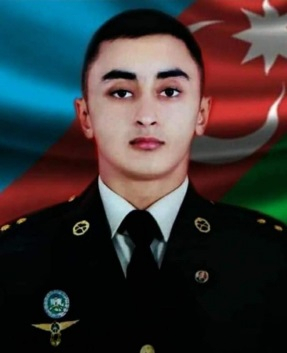

Azərbaycan Ordusunun leytenantı olan Elmar Bayramlı 2020-ci il sentyabrın 27-də Azərbaycan Silahlı Qüvvələri tərəfindən Ermənistan işğalı altında olan ərazilərin azad edilməsi və Azərbaycanın ərazi bütövlüyünün bərpa olunması üçün başlanan Vətən müharibəsi zamanı Tərtər rayonunun Suqovuşan qəsəbəsinin azadlığı uğrunda gedən döyüşlərdə savaşıb. Elmar Bayramlı sentyabrın 29-da Suqovuşan döyüşləri zamanı şəhid olub. Qazax rayonunda dəfn olunub.
Azərbaycanın ərazi bütövlüyünün təmin edilməsi uğrunda döyüş əməliyyatlarına qatılan və hərbi hissə qarşısında qoyulmuş tapşırıqların icrası zamanı vəzifə borcunu şərəflə yerinə yetirdiyi üçün Azərbaycan Prezidenti İlham Əliyevin 15.12.2020-ci il tarixli Sərəncamına əsasən Elmar Bayramlı ölümündən sonra "Vətən uğrunda" medalı ilə təltif edildi.
Azərbaycanın Suqovuşan rayonunun işğaldan azad edilməsi uğrunda aparılan döyüş əməliyyatlarına qatılaraq şəxsi igidliyi və şücaəti nümayiş etdirdiyinə görə Azərbaycan Prezidenti İlham Əliyevin 26.11.2020-ci il tarixli Sərəncamına əsasən Elmar Bayramlı ölümündən sonra "Suqovuşanın azad olunmasına görə" medalı[3] ilə təltif edildi.
Azərbaycanın Laçın rayonunun işğaldan azad edilməsi uğrunda aparılan döyüş əməliyyatlarına qatılaraq şəxsi igidliyi və şücaəti nümayiş etdirdiyinə görə Azərbaycan Prezidenti İlham Əliyevin 29.12.2020-ci il tarixli Sərəncamına əsasən Elmar Bayramlı ölümündən sonra "Laçının azad olunmasına görə" medalı ilə təltif edildi.